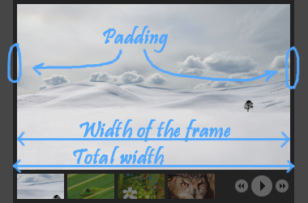
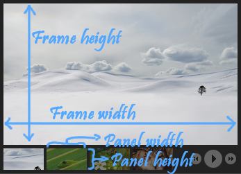

For people who just want a responsive GalleryView and don't care that the filmstrip is at the bottom and how exactly it scales, you can download this template.
However, if you do want to change some settings or want a different scaling, you should continue reading! Changing settings means you will need to write a small piece of javascript to tell the GalleryView how the scaling works.
The responsive version supports all the features of the normal GalleryView. Start by creating a non-responsive version, afterwards we will setup the options to make it responsive.
There are a lot of possible ways to resize a GalleryView. You will need to know how you want it to scale. For example, would you like to let the GalleryView try to fit a div? Or make the height fixed and make only the width dependent on the size of the div? You could also make the height change to fit x images in the filmstrip (when the images in the filmstrip resize).
Thumbnails: Do the thumbnails stay the same size independent of the size of the GalleryView, resulting in more thumbnails that are shown when there is more place? Or would you like to scale the thumbnails to fit the filmstrip and leave the number of thumbnails shown the same? Another option would be to scale the thumbnails so that they take a certain procent of the width of the GalleryView. (assuming the filmstrip is placed vertically)
When you know how you want the filmstrip to resize, it is time to make it happen. Depending on the choices you made in step 2 you will have a totally different responsive gallery.
Calculate the width and height of the frame and an individual thumbnail. What do we need to do?
Every time the browser resizes, we will need to tell the GalleryView the new size of the thumbnails and the frame.
So we need to be able to calculate the things shown in the figure to the right.
How do you do this? An example...
Let us assume the filmstrip is horizontal. We also know the total width of the gallery we want. For example the width of a div.
We want the frame to fit the width of the gallery. Note that we have to take into account the padding as we can see in the picture to the right.
So, to calculate the width of the frame, we take the total width of the gallery and subtract the padding two times. (You can set the padding in the GalleryView: parameter "frame_gap". The default value is 5px.)
Depending on your GalleryView, the calculations are different and I will not go into detail. Just some notes: - If we want the thumbnails to have a constant width/height, calculating the width/height of the panel is really easy: it is just a constant. - If we want something to keep the same aspect ratio we calculate the width first and then multiply it by a certain number (e.g. 0.6) to get the height.
The final step: adding the resize calculations to the code
First we need to be able to call methods on the GalleryView. Therefore we need to save the
.galleryView(); var $gallery = $('#myGallery');After calling
.galleryView()
function resizeTheGallery(){
// Implement your own way of resizing here!
var new_frame_width =
var new_frame_height =
var new_panel_width =
var new_panel_height =
// call the resize method
$gallery.resizeGalleryView( new_panel_width,
new_panel_height,
new_frame_width,
new_frame_height);
}
//call the resize method and bind to resize event
$(window).resize(resizeTheGallery);
resizeTheGallery();
The above code defines a method which contains the calculations from step 3 and calls the correct method on the GalleryView when the calculations are done. The lines at the end make sure the code gets called when the window is resized, and in the beginning.
Note: If you are using a div which the gallery tries to fit, you should also add style="overflow:hidden;" to the div. Otherwise the div will expand to fit the size of the gallery and not the inverse.
This guide was originally written by Jeroen